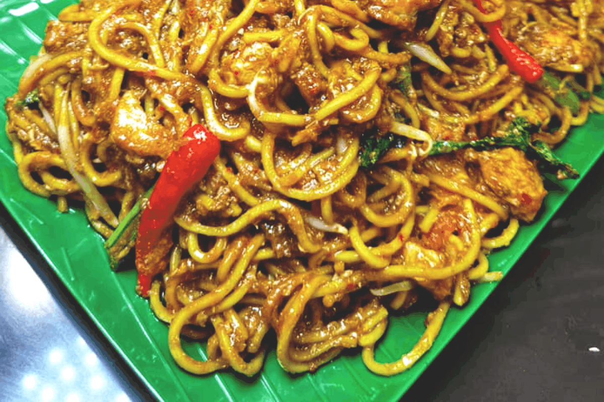

Description
Mee Goreng Mamak has it's own food-lover. The differences between Mamak fried noodles and regular fried noodle is that Mamak fried noodle has more ingredients besides consist of egg and 'rojak' that has been crushed.
Ingredients
- Fried noodle(for packet 1/2kg)
- Grind material
- Dry chilli
- 1 big onion
- 3-4 pieces of garlic
- 1 big spoon of dry anchovies(optional)
Ingredients A
- 2 big spoon of oyster
- 2 big spoon of tomato sauce
- 3 big spoon of chilli sauce
- 2 big spoon of sweet soy sauce
- Soy sauce(add according to the 'blackness' of the noodle colour that we want)
- Salt
- 1 big spoon of sugar
- Whole chicken
- Fish cake
Ingredients B
- 4-5 eggs(if the noodle weigh 1kg use 9-10 eggs, if less the noodle won't be coated. If egg grade A is used, we can reduce the egg by one)
- Noodle
- Mustard
- Sprouts
- Slices of red chilli(use red chilli and slice in the middle)
Steps
- Mixed grind material until oil is heated and melted
- Pour ingredient B one by one, cook until all the ingredients is well mixed and full of flavor, then pour egg.
- Mix it for a little while and then put noodle
- Mix until all the ingredients is fully mixed, and finally add vegetables
Return to top
Return to main page